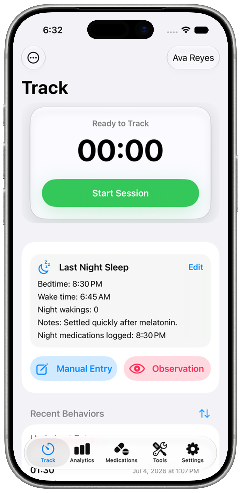
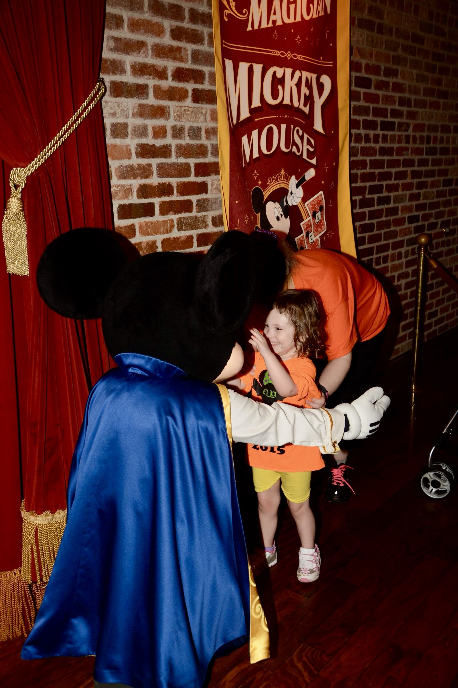
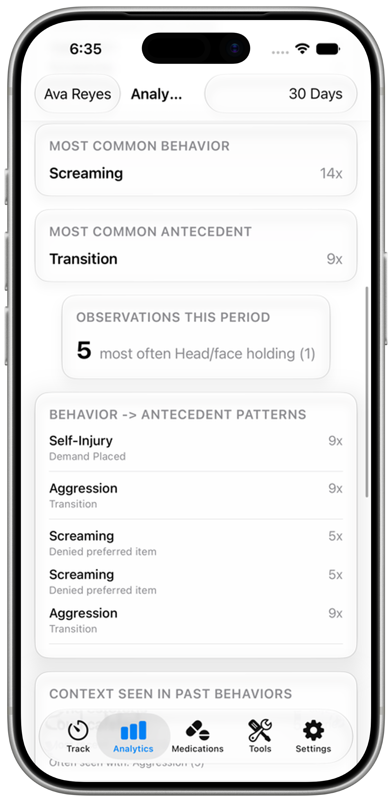
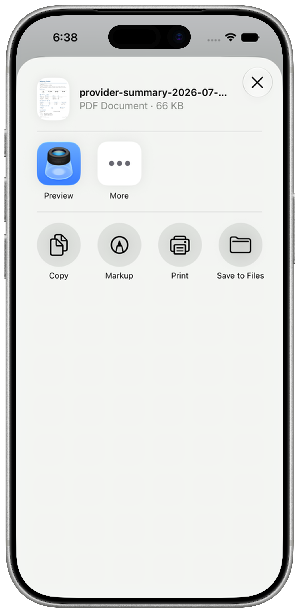

Track sessions quickly
Start a behavior session timer, add notes when you can, and save a clear timestamped record.
Caregiver Tracking Tools
Behavior Toolkit helps caregivers quickly track behavior sessions, medication changes, sleep, notes, observations, and context so patterns are easier to see and share.
Launching soon. Contact support@behaviortoolkit.app if you'd like to hear about updates.

Ella was almost six the first time I heard her voice.
We were at Magic Kingdom on Halloween 2016. She'd been diagnosed with autism a few years earlier and still hadn't spoken. We got in line at the Mickey meet-and-greet on Main Street, the one where he's dressed as the magician from Fantasia. Another kid ahead of us was having a meltdown, talking through it. Ella doesn't have the language skills to do that. We'd been mostly avoiding lines that trip, but we wanted to try one. I was behind her with the camera, taking pictures like any parent does.
When she got up to him, she saw his face and everything about her changed. Her hands came up. Her smile got bigger than I'd ever seen. She leaned into him.
And she said "Love Mickey."
I dropped the camera and started bawling. Ended up hugging her while she was still hugging Mickey. Definitely got some looks.
She had language. She had love. She had a whole self that had been waiting for the right moment to come out. Mickey Mouse was what did it.
That moment is why Behavior Toolkit exists, even if I didn't know it at the time. She was communicating, she just wasn't speaking. Behavior itself is a language.
We've been back to Disney parks a few times since. Mostly Disneyland. She still has hard days there, she has hard days everywhere. But something about those parks reaches her in a way most places don't. Whatever this app becomes, part of what I want it to do is take Ella to see Mickey as many times as we can manage.
The goal is not to label a child or reduce anyone to data. The goal is to document what happened, what changed, and what may be useful later when talking with trusted care team members.

Start a behavior session timer, add notes when you can, and save a clear timestamped record.

Medication changes, dose logs, sleep details, observations, and notes can help caregivers review patterns with more than memory alone.

Export summaries and share information with trusted people when you choose. Sensitive family information deserves careful handling.
Important: Behavior Toolkit is a tracking and communication tool. It does not diagnose, treat, predict, or replace professional care. Always work with qualified medical, therapeutic, educational, or behavioral professionals for care decisions.